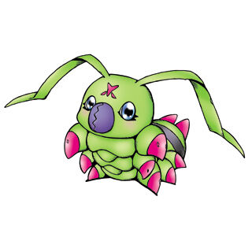

V-Mon digievolui para X-Vmon e consegue derrotar Ogremon. Você ouviu falar que Argomon foi visto na praia e quer ir direto pra lá, mas EX-VMon quer falar com seu amigo Woormmon, antes. O que você faz?

V-Mon, um Digimon de atributo Data, vive na Native Florest que está sendo atacada por Ogremon, um Digimon de nível adulto que foi infectado por Argomon. Você deve ajudar V-Mon na batalha. O que V-mon deve fazer?